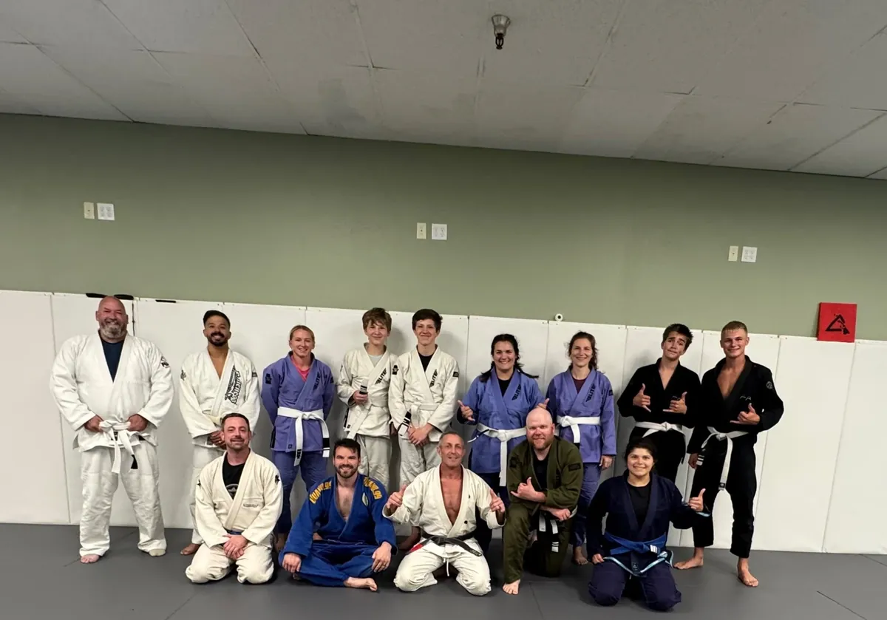
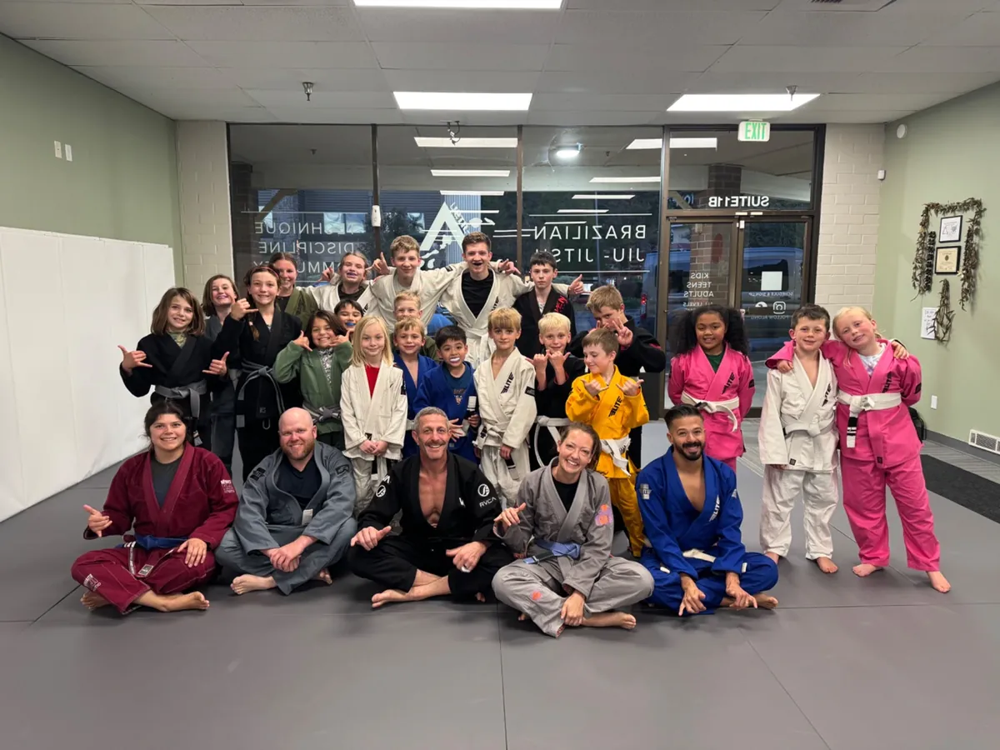
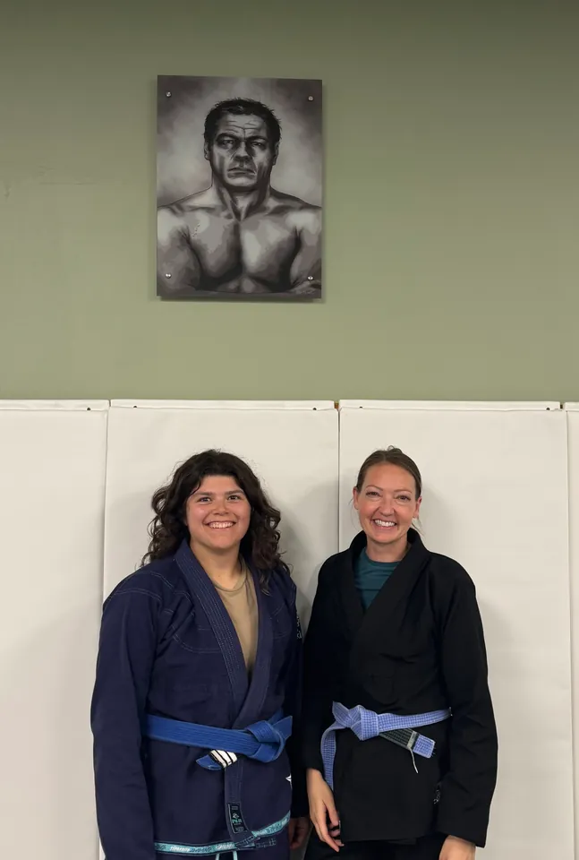

Ages 16+ · Gi & No-Gi
Adult Jiu-Jitsu
Train technical Brazilian Jiu-Jitsu in a focused, respectful environment. Students ages 13–15 may join with instructor approval based on experience, maturity, and skill level.
- Morning: Mon. & Tue. No-Gi with Micah; Thu. Gi with Brandon, 9:30–11:00 AM
- Evening: Mon. & Thu. Gi; Tue. No-Gi, 7:00–8:00 PM; Wed. Adult Open Mat / long sparring, 5:00–7:00 PM; all gyms welcome
- $125/month unlimited
See schedule & pricing
Ages 6–16 · Gi & No-Gi
Kids Jiu-Jitsu
Build confidence, discipline, and solid fundamentals through technical training with a supportive team.
- Monday & Thursday Gi; Tuesday No-Gi, 5:15–6:45 PM
- $135/month
See schedule & pricing
Women-only class
Ladies Friday Nights
Train with Coach Lauren and Coach Leilani in women-only Brazilian Jiu-Jitsu and self-defense classes. The first Friday of each month is free self-defense and open to all.
- Starts November 13, 2026
- Fridays, 6:00–7:00 PM
- $60/month
Academy community photo.
Ask about the class